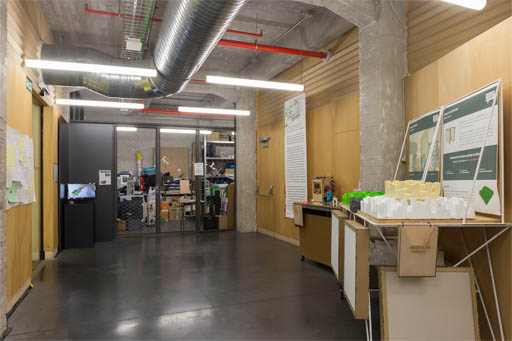

La planta 1 de la nave Cenicero se divide en tres zonas: la oficina en la parte Sur, orientada hacia Atocha, un almacén en la parte Norte, orientado hacia la Plaza de las Letras, y un vestíbulo entre ambas, al que se accede desde el rellano del primer piso de La Cosa atravesando una puerta de cristal de apertura automática. A ella llegamos subiendo esta escalera y girando a la derecha tras ascender por la rampa, o bien por el ascensor situado en el edificio Alameda, girando a la izquierda y cruzando el pasillo de la Cosa que une ambas naves.
Al igual que en resto de Medialab, en la parte septentrional de la nave hay una gran estructura de madera que no llega a tocar las paredes de hormigón. Esta estructura, de planta casi rectangular y compartida por los tres espacios, es donde se ubican las escaleras de emergencia y los baños.
⇧ Volver arriba
Al traspasar la puerta de entrada, en la misma línea de esta y a mano derecha, hay una pared de cristal, de unos seis metros de ancho, orientada al patio. Desde ella podemos ver La Cosa y los tirantes de metal que sostienen esta escalera colgante.
En ángulo recto, a nuestra derecha, tenemos un cerramiento de malla metálica haciendo rombos, en el que se abre la puerta que da paso a la oficina.
A continuación, frente a la puerta de cristal por la que hemos entrado desde La Cosa, se encuentra la pared de la estructura de madera. En su parte derecha, hay un pequeño distribuidor, ubicado ya dentro de esta, desde el que se puede acceder a los baños. Más a la izquierda, en esta misma pared, se sitúa la puerta de la escalera de emergencia que baja a la ludoteca.
A nuestra izquierda, enfrente de la entrada a la oficina, hay otro cerramiento de malla metálica que da al almacén.
Los techos de este piso son de hormigón, con las vigas y las instalaciones de climatización y cableado a la vista, y el suelo es de hormigón pulido de color gris oscuro, casi negro.
⇧ Volver arriba
El almacén es rectangular, con unas dimensiones aproximadas de 4 metros de ancho por 15 de largo. El lado corto de la izquierda, según entramos, es totalmente de cristal como el resto de la fachada que da al patio. Los dos siguientes, que dan al paso de carros y la calle Cenicero respectivamente, son de cemento y no tienen ventanas. A nuestra derecha, a continuación de la malla metálica donde se sitúa la puerta, está la pared de la estructura de madera, cerrando el almacén por su lado sur, y al fondo un pasillo que lleva a las oficinas bordeando esta estructura por detrás.
Las paredes del almacén, excepto la de cristal, están cubiertas de arriba debajo de estanterías repletas de todo tipo de objetos: material de los grupos de trabajo, ordenadores, monitores, proyectores, cables, cajas, carteles…
⇧ Volver arriba
La oficina donde trabaja el equipo de Medialab Prado es una sala diáfana de planta rectangular con cuatro pilares en el centro.
Nada más entrar, nos encontramos de frente con un pasillo delimitado a la derecha por los ventanales que dan al patio y a la izquierda por la librería en forma de L que acota el espacio donde están los puestos de trabajo. El otro palo de esta L se extiende hacia la izquierda, en paralelo a la pared de red metálica donde está la puerta. Dentro de la L que forma esta estantería se ubican las mesas y las sillas, agrupadas formando islas.
La librería, blanca y abierta por ambos lados, contiene una pequeña biblioteca sobre los temas que se tratan en Medialab. En la balda superior hay objetos fabricados en el Fablab y algunos de los premios recibidos por Medialab, como el Princesa Margarita de la Cultura Europea 2016.
Si avanzamos hasta el fondo de la sala por el pasillo por el que hemos entrado, nos encontramos de frente una pared de madera con dos puertas. La que está situada en el extremo derecho, justo al final del pasillo, lleva a una a una sala de reuniones y a un pequeño espacio de almacenaje y cocina. La puerta del extremo izquierdo conduce a una escalera de emergencia.
La pared de la izquierda es de hormigón, con seis grandes ventanas que se abren a la calle Cenicero. Por el contrario, la pared opuesta está totalmente abierta hacia el interior del patio, con paneles correderos de cristal de suelo a techo.
Al Norte, la oficina queda cerrada por la estructura de madera, una pared irregular con entrantes y salientes en la que se abre un pequeño espacio para hacer infusiones y cafés. A continuación, esta estructura se une con la red metálica y la puerta por la que hemos entrado.
⇧ Volver arriba
⇦ Anterior: Nave Cenicero - Planta 0
⇨ Siguiente: Nave Cenicero - Planta 2